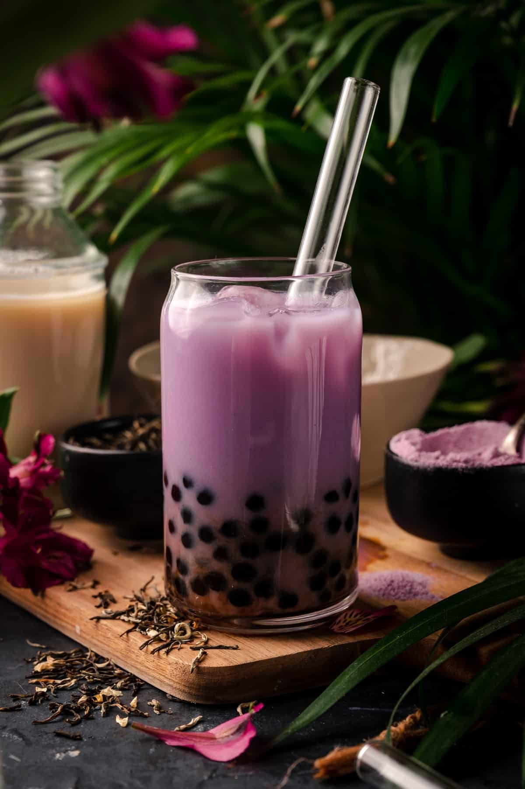

Introduction
Boba tea, also known as bubble tea, is a delicious and refreshing drink made with tea, milk, sugar, and chewy tapioca pearls. Loved worldwide, it offers endless flavors and toppings to suit every taste.
History of Boba Tea
Boba tea was invented in Taiwan during the 1980s. It is believed to have originated when tapioca pearls were added to iced milk tea, creating a fun and unique texture. Over time, it gained popularity across Asia and eventually spread to the rest of the world.